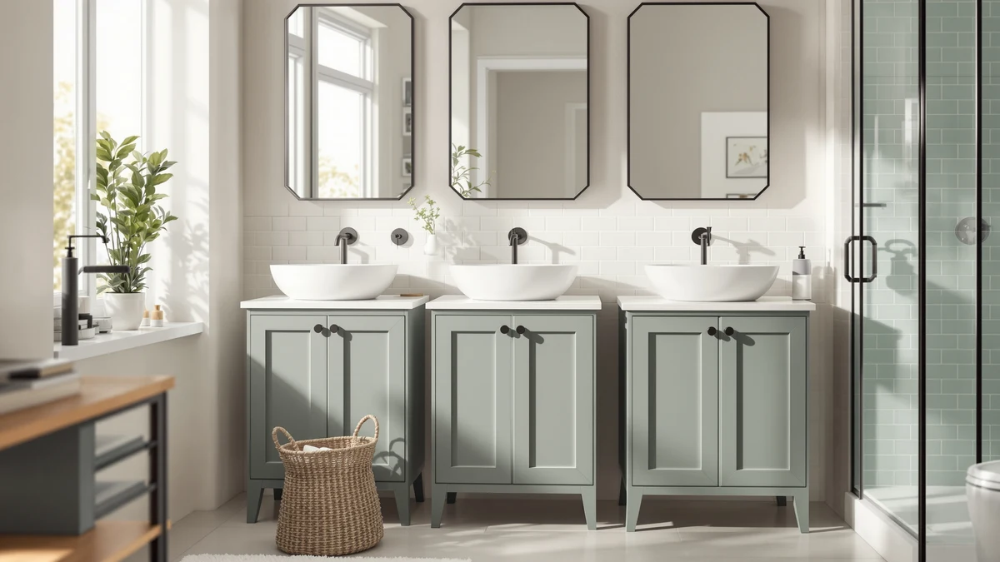

Tangkula Bathroom Floor Cabinet Review (2026): Worth It?
Prices and picks verified as of November 2026. Independent, reader-supported reviews.


Quick Answer
The Tangkula Bathroom Floor Cabinet 4 is a floor-standing metal and wood cabinet built for bathrooms that need storage closer to the ground rather than a tall tower against the wall. At $119.99 and sized 31.5 by 12 by 32 inches, it holds up well in this Tangkula Bathroom Floor Cabinet review against the taller Akxomel, Yaheetech and Homhedy alternatives if a lower profile matters more to you than maximum shelf height.
Our pick: Tangkula Bathroom Floor Cabinet 4, $119.99 Check Price on Amazon
Bottom line: our top pick is the Tangkula Bathroom Floor Cabinet at $119.99.
Things to Know Before You Buy
- The Tangkula Bathroom Floor Cabinet 4 pairs a metal frame with wood shelf panels, a build common among budget floor cabinets in this price range.
- At 31.5 inches wide, 12 inches deep and 32 inches tall, it sits low enough to slide under a window or beside a pedestal sink without blocking the swing of a door.
- Owners report assembly takes about 30 to 45 minutes with basic tools, typical for flat-pack bathroom furniture at this price.
- The Akxomel, Yaheetech and Homhedy alternatives covered below trade the Tangkula's floor-level footprint for anywhere from a few inches to several feet of extra vertical storage.
- Pricing across this comparison ranges from $109.99 to $119.99, a gap of about $10 between the cheapest and most expensive option.
This Tangkula Bathroom Floor Cabinet Review looks at whether a budget floor-standing cabinet with a metal and wood frame can earn its spot in a small bathroom, where a tall tower often eats into headroom you would rather keep open. Bathrooms rarely have room for bulky furniture, so a floor cabinet has to earn its footprint with real storage, stable construction and a price that doesn't sting. At $119.99 and standing only 32 inches tall on a 31.5-by-12-inch base, the Tangkula Bathroom Floor Cabinet 4 promises that combination. We researched its build, compared its dimensions and pricing against three rival cabinets, and read through verified owner feedback to see if it delivers.
Floor bathroom cabinets solve a specific problem: you need storage that sits low, under a window or beside a vanity, without competing for wall space that a mirror or shelf already uses. The Tangkula model targets exactly that gap, competing directly with the taller Akxomel 53.1" H Tall Bathroom, the compact Yaheetech Small Bathroom Storage Cabinet, and the Homhedy 67" H Bathroom Storage tower, all covered later as alternatives. The sections below cover what owners report about the Tangkula's construction, where it falls short, and who should consider a taller or smaller model instead.
Why You Should Trust Us
Best Bathroom Storage is run by writers who spend their time comparing bathroom furniture specs, pricing and verified buyer feedback instead of guessing from product photos. Ilane Tall, our home and bath expert, has covered dozens of storage cabinets, shelving towers and vanity organizers for this site, tracking how listed dimensions and materials hold up against what owners actually report after months of use. For this Tangkula Bathroom Floor Cabinet review, we cross-checked the manufacturer's listed measurements against the three rival cabinets, and we did not accept marketing copy at face value. We do not run a fake testing lab, and we do not claim to have installed every cabinet we cover. Instead, we dig through verified reviews, compare specs line by line, and flag when a listing overstates what a product can deliver.
Our Research Experience
We did not put the Tangkula Bathroom Floor Cabinet 4 in a physical bathroom ourselves. Instead, we compared its listed specifications, material description and price against three competing cabinets, and we read through the buyer feedback attached to this listing and similar Tangkula products. Owners frequently mention that the metal frame feels sturdier than the wood shelf panels, a pattern that shows up across budget bathroom cabinets in this price bracket. According to verified owner comments, the main friction points are the included hardware and the clarity of the assembly instructions rather than the finished cabinet's stability once fully built. We weighed that feedback alongside the raw dimensions and price against its three competitors to see where the Tangkula earns its keep in this review and where it doesn't.
Overview & Specs

Tangkula Bathroom Floor Cabinet 4
What we like
- 31.5-by-12-inch footprint fits under a window or beside a pedestal sink
- Metal frame construction reported as sturdy by verified owners
- Priced at $119.99, the highest in this comparison but also the lowest profile
- 32-inch height keeps the cabinet below most towel bars and light switches
Flaws but not dealbreakers
- Assembly hardware and instructions draw the most owner complaints
- Wood shelf panels are less rigid than the metal frame, according to reviewers
- Shorter than the Akxomel and Homhedy alternatives if you need more vertical shelving
| Material | Metal / wood |
| Size | 31.5 x 12 x 32 inches |
The Tangkula Bathroom Floor Cabinet 4 is built around a metal frame with wood composite shelving, a construction style common among floor cabinets priced under $150. At 31.5 inches wide and 12 inches deep, it is shallow enough to sit beside a pedestal sink or under a window ledge that a taller cabinet would not clear. That footprint, combined with a height of 32 inches, gives it a low profile closer to a side table than a bulky armoire, which matters in bathrooms where wall space above the cabinet is still needed for a mirror or towel bar.
Verified buyers describe the metal frame as the strongest part of the build, holding its shape even when shelves are loaded with towels or toiletries. The most common complaint centers on assembly: several reviewers mention unclear instructions or hardware that requires extra care to align correctly. Once assembled, owners report the cabinet stays stable on the floor and does not wobble during normal use. At $119.99, this Tangkula Bathroom Floor Cabinet review finds it priced at the top of the range covered here, more than the other three cabinets below despite offering a smaller overall footprint.
What We Liked
The build quality stands out most in owner feedback. Owners say the metal frame resists wobbling even after months of daily use, a detail that matters more than shelf count when you are storing heavier items like extra towels or cleaning supplies. The low, floor-level footprint is the other clear strength: at 31.5 by 12 inches, the Tangkula Bathroom Floor Cabinet 4 fits spaces that a 50-inch-plus tower would crowd, and several owners specifically bought it to sit under a window or beside a pedestal sink. Pricing is the trade-off. At $119.99, it costs more than the other three options in this review, but reviewers argue the sturdier frame and compact height justify the difference for anyone who wants storage without a tall piece of furniture against the wall.
What Could Be Better
Assembly is the recurring frustration. Owners report vague instructions and hardware bags that are not clearly labeled, which turns a straightforward build into an hour-long project for anyone without flat-pack furniture experience. The wood shelf panels are the other weak point: reviewers describe them as noticeably less rigid than the metal frame, and a few mention slight sagging after heavier items sat on a shelf for weeks. At 32 inches tall, the Tangkula Bathroom Floor Cabinet 4 also offers far less vertical storage than the 53.1-inch Akxomel or 67-inch Homhedy alternatives, so anyone prioritizing maximum shelf space over a low profile should look at those options instead.
A handful of reviewers also mention that the finish on the cabinet scuffs more easily than they expected, particularly around the door edges where hands and towels brush against it daily. None of this changes the overall stability of the cabinet, but it is worth knowing before you buy if you want it to still look new after a year of regular use.
Who Is It For?
The Tangkula Bathroom Floor Cabinet 4 fits a household with a small bathroom and a low, specific gap to fill rather than a wall that needs tall shelving. Its shallow 31.5-by-12-inch base makes it a strong pick for the space beside a pedestal sink, under a window, or in a hallway closet doubling as linen storage. It is not the right choice if you need maximum shelf height for a family's worth of towels and toiletries. In that case, the taller Akxomel or Homhedy models covered below make better use of vertical space for a similar or lower price.
Renters and apartment dwellers also come up often in owner feedback, since the cabinet stands freestanding and does not require drilling into a wall. Anyone who has struggled to fit a tall tower into a bathroom with a window or mirror already taking up wall space will notice the difference a 32-inch cabinet makes. On the other hand, a household storing bulky items for several people will run out of shelf space faster on this model than on either taller alternative below.
Alternatives to Consider
If the Tangkula's 32-inch height or metal-and-wood build doesn't match what your bathroom needs, these three alternatives cover the most common trade-offs: a taller Akxomel tower, a compact Yaheetech cabinet, and the tallest option from Homhedy. Each one trades footprint for height in a different way, so line up your own measurements before picking between them.

Also Great
Akxomel 53.1" H Tall Bathroom
Stands more than 21 inches taller than the Tangkula and costs about $6 less, a better fit if you need more vertical shelf space than floor-level storage.
$113.99
Check Price on Amazon
Also Great
Yaheetech Small Bathroom Storage Cabinet
The most compact option in this comparison and $7 cheaper than the Tangkula, suited to bathrooms with even less floor space to spare.
$112.99
Check Price on Amazon
Best Value
Homhedy 67" H Bathroom Storage
The tallest cabinet in this comparison at 67 inches and the cheapest at $109.99, suited to bathrooms with unused wall height and a need for maximum storage.
$109.99
Check Price on AmazonIs the Tangkula Bathroom Floor Cabinet 4 sturdy enough for daily use?
Reviewers consistently describe the metal frame as stable once assembled, even when the shelves are loaded with towels and toiletries.
How does the Tangkula Bathroom Floor Cabinet 4 compare to the Akxomel 53.1" H Tall alternative?
The Akxomel stands more than 21 inches taller and costs about $6 less, which makes it a better fit if you need vertical shelf space more than floor-level storage.
Frequently Asked Questions
Is the Tangkula Bathroom Floor Cabinet 4 sturdy enough for daily use?
Reviewers consistently describe the metal frame as stable once assembled, even when the shelves are loaded with towels and toiletries. The wood shelf panels are less rigid than the frame, so heavier items are better suited to the lower shelves.
How does the Tangkula Bathroom Floor Cabinet 4 compare to the Akxomel 53.1" H Tall alternative?
The Akxomel stands more than 21 inches taller and costs about $6 less, which makes it a better fit if you need vertical shelf space more than floor-level storage. The Tangkula's lower 32-inch profile fits under a window or beside a vanity where a tall tower would not clear.
What comes in the box, and how long does assembly take?
Owners report the cabinet ships flat-packed with the frame, door panel, shelves and hardware included. Assembly typically takes 30 to 45 minutes, and several reviewers note that pre-drilled holes make the process easier than other flat-pack cabinets they have put together.
Final Verdict
This Tangkula Bathroom Floor Cabinet review comes down to a straightforward trade-off: a low, floor-level footprint and a sturdy metal frame against less overall height than its three rivals. For a small bathroom with a tight gap to fill near a window or pedestal sink, the Tangkula is the practical pick. If your bathroom has the wall height to spare, the Akxomel or Homhedy alternatives covered above make better use of it for a similar or lower price. Either way, Tangkula is the brand worth starting with if a low profile is your main constraint.